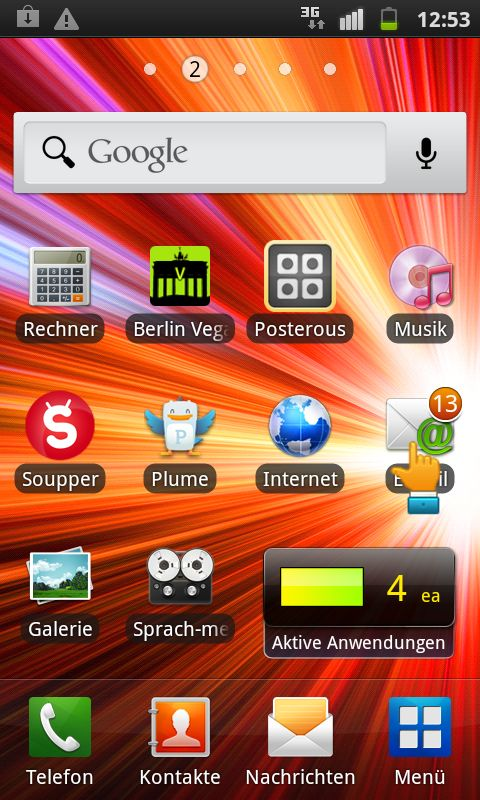
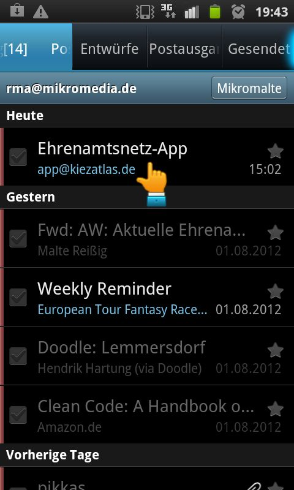
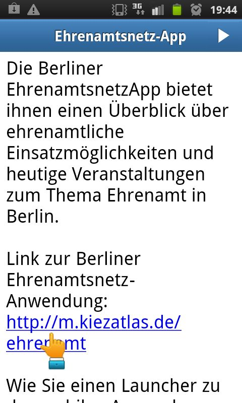
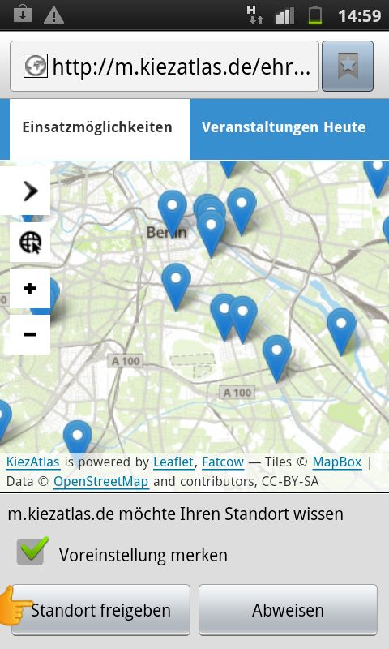
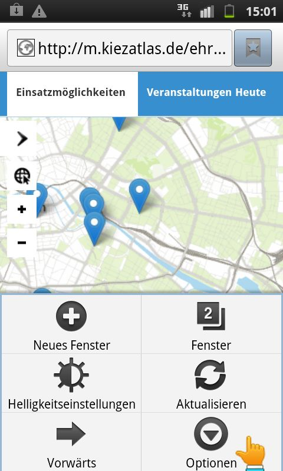
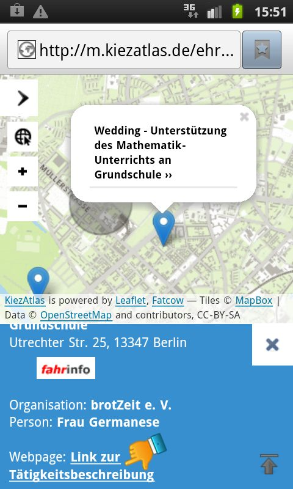
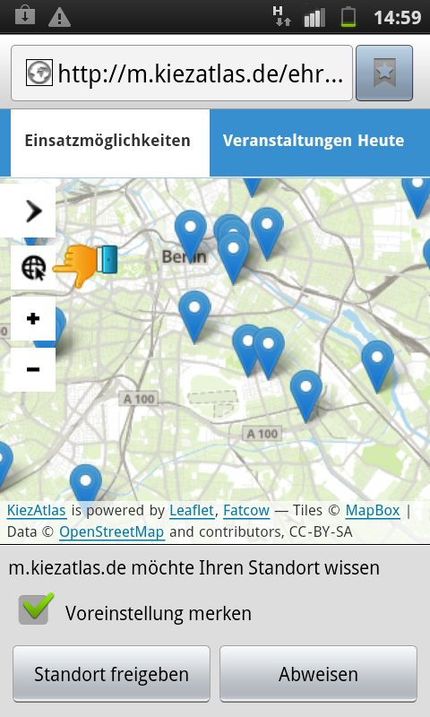
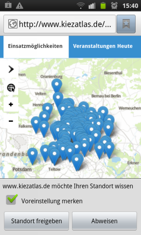
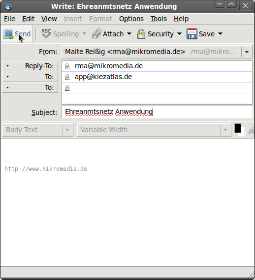

So starten Sie die Ehrenamtsnetz-App für unterwegs
Die Anwendung wurde konzipiert um Ihnen ausgehend von einem Standort Ihrer Wahl, Information zu allen uns bekannten ehrenamtlichen Einsatzmöglichkeiten bzw. Veranstaltungen zu liefern. Sie erreichen die Anwendung unter der Adresse http://m.kiezatlas.de/ehrenamt/.
Alternativ, um die Anwendung mit Ihrem Smartphone aufzurufen, können Sie uns von der E-Mail-Adresse, die Sie auch auf Ihrem Smartphone abrufen, eine leere Mail an app|@|kiezatlas.de schicken. Dann erhalten Sie umgehend eine Antwort mit dem Link zur Anwendung zugeschickt.
- Sie möchten direkt einen Schnellstarter zur Ehrenamtsnetz-App auf Ihrem Android-Phone einrichten? (springen Sie direkt zu Schritt 5)
- Sie möchten einen Schnellstarter zur Ehrenamtsnetz-App auf Ihrem Android-Phone einrichten, sind aber gerade an ihrem PC?
- Sie möchten mehr über die Abfrage des aktuellen Standorts mittels Ihres Smartphones erfahren?
- Sie möchten weiterführende Bedienhinweise zur Ehrenamtsnetz-App?
Im Folgenden finden Sie schrittweise Hinweise zur Installation der Ehrenamtsnetz-App in Form eines sog. Launchers (Schnellstarters) auf Ihrem Smartphone. Wir freuen uns natürlich über Ihre Anregungen zur Nutzung dieses neuen Angebots, sowie über die tolle Möglichkeit diese zum Abschluss der jetzigen Beta-Phase auch gleich noch umsetzen zu können.
Ihre Rückmeldung erreicht uns unter der E-Mail-Adresse mobile|@|kiezatlas.de. Interessierte und engagierte Software-EntwicklerInnen finden den freien Quellcode zur möglichen Weiterentwicklung dieser plattformunabhängigen App gleich hier.
Ihr Team vom KiezAtlas, 28.August 2012
Einrichtung eines Schnellstarters zur Ehrenamtsnetz-App mit ihrem Android-Smartphone (vom PC aus)
Sie sind gerade an Ihrem PC und möchten die Ehrenamtsnetz-App auf Ihrem Smartphone installieren?
Um die Anwendung mit ihrem Smartphone aufrufen zu können ohne die Adresse manuell in Ihren Browser eingeben zu müssen, schicken Sie uns von der E-Mail Adresse die Sie auch auf ihrem Smartphone abrufen, eine Mail an app|@|kiezatlas.de. Sie erhalten dann kurz darauf eine Antwort von uns die den Link zur Anwendung enthält. Im Folgenden sind die Schritte im Einzelnen dargestellt:

 
4. Im Folgenden öffnet sich zum ersten Mal die Ehrenamtsnetz-App in Ihrem Webbrowser. Beim erstmaligen Aufruf haben Sie die Möglichkeit Ihren Standort einmalig oder ein für alle mal freizugeben, wobei sich Ihre Entscheidung hier nur auf die Ehrenamtsnetz-App auswirkt. Wir empfehlen Ihnen natürlich Ihren aktuellen Standort freizugeben ("Standort freigeben"), wir speichern diese Daten selbstverständlich nicht, die Weitergabe Ihres aktuellen Standorts erleichtert lediglich den Einstieg in die Anwendung.

Falls Sie weitere Fragen zur Standortfreigabe haben, hilft Ihnen hoffentlich auch unsere Erklärung zur hierbei von uns eingesetzten Technik.
5. Wir gehen in diesem Schritt davon aus, dass Sie die Ehrenamtsnetz-App bereits über den Link aufgerufen haben. Nun sehen Sie die Anwendung auf Ihrem Smartphone und um die Anwendung wie alle anderen Apps auf Ihrem Smartphone mit einem sog. Launcher einfach wiederverwenden zu können und so auf die tagesaktuellen Informationen aus dem Ehrenamtsnetz zuzugreifen, führen Sie die folgenden zwei Aktionen auf Ihrem Android-Smartphone aus:
Drücken Sie einmal den globalen Android Menü-Knopf (unten links neben der Home-Taste) und starten so das in der ersten, folgenden Abbildung dargestellte Auswahlmenü. In diesem drücken Sie wie abgebildet den Menüpunkt Optionen um zum nächsten Schritt zu gelangen. Und in diesem Auswahlmenü befindet sich der Auswahlknopf Schnellz. für Start hinz, der nach einem Klick einen sog. Launcher zur Ehrenamtsnetz-App auf ihrem Homescreen ablegt.


Generelle Hinweise zum Funktionsumfang und zur weiterführenden Nutzung der App



Weitere Hinweise zur Freigabe Ihres Standorts
Unsere Anwendung fragt bei Ihrem Smartphone den aktuellen Standort ab. Dies können Sie
- einmalig oder dauerhaft zulassen
- abweisen, und die Karte manuell hin- und herschieben

Anhänge zu obigen Hinweisen
So schicken Sie uns eine E-Mail an app|@|kiezatlas.de. Kurz darauf erhalten Sie automatisch eine Antwort-Mail mit Installationshinweisen. (zurück zu den Hinweisen).
Impressum
Das Kiezatlas-Team und das bürgeraktiv-Portal haben diesen Stadtatlas der Ehrenämter gemeinsam für Sie aufbereitet.
Vielen Dank an das Projekt Network der GskA gemeinnützige Gesellschaft für sozial-kulturelle Arbeit mbH und der Landesredaktion von berlin.de.
Malte Reißig, Berlin im August 2012